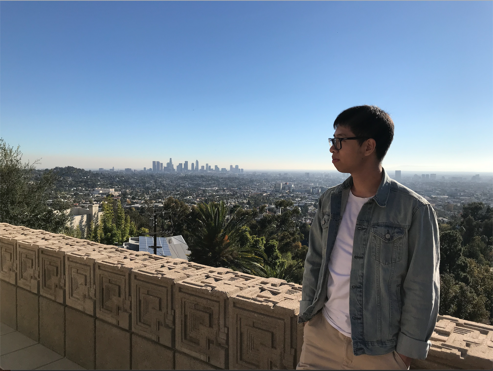

Yuwen Yu
Travel is always my favorite thing to do because I can get to know all the different clutures. About ten years ago I moved from my hometown in China to Seattle and it was my first time to feel how the living amosphere of a totally different culture make me excited. At that time I started to have an idea to travel all over the world and to experience the culture value in every place. It's a goal agoing, and I am always looking forward it.
Nam lacinia consequat odio, id eleifend lacus vehicula facilisis. Donec tristique semper est, vitae hendrerit est sodales ut. Nam et dui orci. Pellentesque augue metus, gravida ut nibh sit amet, sollicitudin hendrerit purus. Donec eu porta risus. Pellentesque dictum egestas orci, at molestie nisi rhoncus a. Integer dapibus sit amet magna ac feugiat. Ut sodales eget sem vitae aliquam. Vivamus odio sem, cursus non enim et, malesuada interdum est. Fusce dictum risus nibh, vitae viverra nisl mollis a. Sed id metus in ipsum eleifend sodales.